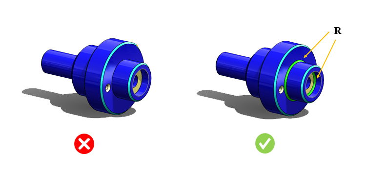

旋削パーツの内側コーナーには、可能な限り大きな半径を指定してください。
鋭利な内側コーナーは避けてください。工具の欠損が起こりにくい大きなノーズ半径を持つ工具を使用できるよう、十分な内側半径を設ける必要があります。未加工（鋳造）面に対して直角となる段付きの旋削面は、バリの発生につながる可能性があります。旋削パーツの内側コーナーにおける最小半径は、使用可能な切削インサートを決定する要因となります。
常に、より大きな半径を持つ切削インサートを使用することが推奨されます。可能であれば、内側コーナー半径は製造業者の裁量に委ねることが望まれます。
本ルールは、内側コーナーに適切な半径が付与されているかどうかをチェックします。内側コーナーにおける最小半径のデフォルト設定値は、0.5 mm（0.0196 インチ）以上です。
ルールUIでは、材料の一覧が Map Material から読み込まれ、ユーザーは材料およびその値を構成できます。
材料とその値を構成した後、ユーザーは Ctrl+M コマンドを使用して、ルールUI内で材料グループおよびグレードとともに、構成済み材料の一覧をフィルタ表示できます。同じキー（Ctrl+M）を使用してフィルタをリセットすることもできます。

ここで、
R = 内側コーナー半径（Internal Corner Radius）